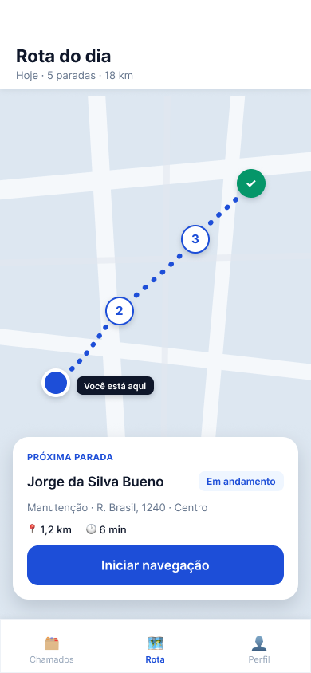
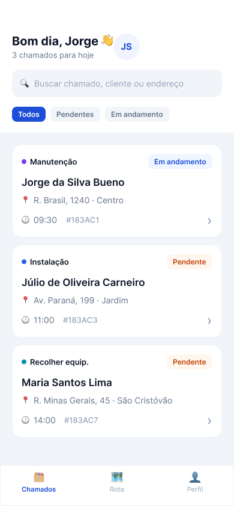
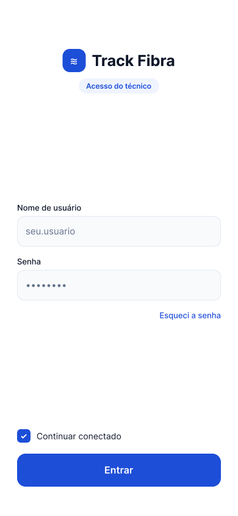

O Track Fibra reúne as chamadas de serviço — instalação, manutenção e recolhimento — num só lugar. O técnico vê tudo do dia no celular; o supervisor acompanha em tempo real pela web.



Uma demonstração curta de como o app resolve o dia a dia de quem trabalha em campo.
Hoje o trabalho é coordenado por planilha e WhatsApp — sem fonte única de informação e sem visibilidade. O Track Fibra ataca exatamente essas dores.
Cliente, endereço, tipo e status de cada chamado — sempre atualizados. Acabou a corrida atrás de informação.
Sugestão de rota do dia com mapa e navegação, reduzindo deslocamentos desnecessários entre atendimentos.
O supervisor vê onde está cada técnico e o status das chamadas, sem precisar cobrar pelo WhatsApp.
Botões grandes, fluxos curtos e poucas telas — pensado para técnicos com qualquer nível de familiaridade digital.
Observações e fotos na conclusão do chamado, com opção de finalizar ou reagendar em um toque.
Mobile para o técnico em campo e versão web para o supervisor coordenar e distribuir as chamadas.
As telas guiam a jornada do técnico em campo, seguindo o fluxo definido no Design Sprint.
Acesso rápido para começar o dia.
Busca, filtros e status de cada atendimento.
Paradas, rota e a próxima parada em destaque.
Enquanto o técnico trabalha no app, o supervisor coordena tudo pelo navegador. É daqui que os chamados nascem — e é aqui que a operação fica visível em tempo real.
| Cliente | Tipo | Técnico | Status |
|---|---|---|---|
| Jorge da SilvaAv. Paraná, 199 | Manutenção | Carlos M. | Em andamento |
| Júlio CarneiroR. Júlio, 299 | Instalação | Ana P. | Pendente |
| Mariana SouzaAv. Brasil, 1402 | Recolhimento | Carlos M. | Pendente |
| Roberto LimaR. das Flores, 87 | Instalação | Diego F. | Concluído |
| Fernanda AlvesR. Goiás, 540 | Manutenção | Ana P. | Pendente |
Mapa do problema (Usuário → Objetivo), esboços das soluções votadas e storyboard — construídos colaborativamente e disponíveis no quadro interativo.
Telas de alta fidelidade do app do técnico — login, chamados, rota e encerramento.
UTFPR – Campo Mourão · Bacharelado em Ciência da Computação · Interação Humano-Computador (2026).
Ciência da Computação
Ciência da Computação
Ciência da Computação
Ciência da Computação